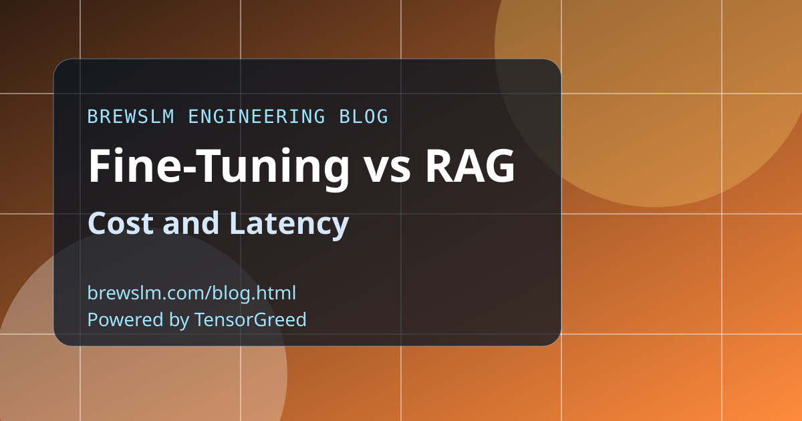

Break fine-tuning costs into lifecycle components
Include data curation, training compute, validation runs, and model version operations in your estimate. Fine-tuning can reduce prompt overhead at runtime but shifts cost into retraining cycles. Teams should model this across expected update frequency.
Break RAG costs into query path components
RAG cost is not just vector database spend. Include embedding refresh, retrieval orchestration, reranking, and context token expansion. These costs can dominate at scale when query volume grows faster than expected.
Use p95 latency math, not average latency
Users experience tail latency, especially in multi-step retrieval flows. Benchmark p95 and p99 end-to-end with realistic concurrency. Averages can hide the operational risk that drives support load and churn.
Choose by workload shape and update cadence
High-volatility knowledge workloads often favor RAG despite extra request complexity. Stable behavior-heavy workloads may justify fine-tuning with leaner runtime calls. The best architecture is the one that fits your traffic and change profile.